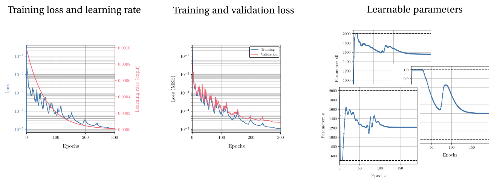

Local material model updating¶
One of the core functionalities of HookeAI is the ability to perform local, direct material model updating. Given a data set of strain-stress paths, often obtained from numerical simulations, and a given parametric material model, the Automatically Differentiable Model Updating (ADiMU) framework is leveraged to identify the optimal parameters of the material model that best explain the material behavior observed in the data.

Key resources¶
Source file/directory |
Description |
|---|---|
|
Directory containing the implementation of all pre-built material model architectures, as well as the associated training and prediction procedures. |
|
Directory containing a set of pre-configured user scripts to perform local model updating for the different pre-built material model architectures. |
Model updating procedures¶
Alongside each material model architecture, HookeAI provides the corresponding modules to perform the two main procedures involved in local model updating: (i) the training procedure (training.py), which implements the optimization loop to update the material model parameters, and (ii) the prediction procedure (prediction.py), which enables the evaluation of the trained material model on (unseen) testing data.
The training procedure is highly customizable, allowing the user to select different optimization algorithms, learning rate schedulers, loss functions, and other hyperparameters. It also includes a set of useful features such as early stopping, based on provided validation data, and the automatic fitting of suitable data scalers based on the training data, which are then used to consistently normalize/denormalize the input/output features. Lastly, it provides a detailed logging and a set of output files that summarize the training process and results.
{kind=link}
The prediction procedure allows a straightforward evaluation of the material model’s performance on any given data set. The input/output features are automatically normalized/denormalized using the model’s fitted data scalers, ensuring consistency between training and testing phases, and batch processing is supported to efficiently predict on large data sets. Sample prediction files are generated with relevant results, including the corresponding prediction loss when the ground truth data is provided. Lastly, it also provides a detailed logging of the prediction process and an output file sumarizing the prediction parameters and results.

Pre-configured user scripts¶
HookeAI provides a set of pre-configured user scripts to perform the local model updating procedures for the different pre-built material model architectures. These scripts can be readily used and demonstrate the typical workflow for training and evaluating each material model, including all pre- and post-processing steps such as setting the model architecture, loading the data sets, computing the input/output features, configuring the training/prediction parameters, computing performance metrics, and generating prediction plots. These can also be easily adapted to suit specific user needs, without the need to implement the entire workflow from scratch.